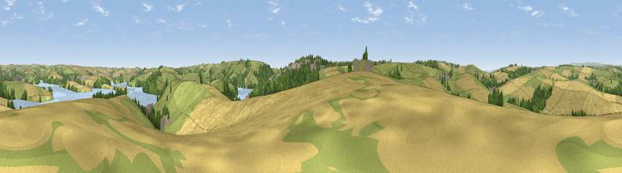

Viewpoint near Salcombe
#17624 in England · top 41% of its area beats it · near Salcombe · path 283 mWhere it is
The exact computed spot (SX 73325 40425). Click the marker for map links.
Public access: the nearest public right of way is about 283 m away — the final stretch may cross private land. Computed from Natural England's CRoW access layer and OpenStreetMap rights of way — not the legal definitive map. Always verify locally.
The view, rendered

A 360° render of this exact spot computed from the terrain model, tree cover and land cover — summer colours, afternoon light, calibrated against photographs of famous viewpoints. Real trees, hedges and buildings will differ in detail.
The panorama
Grey silhouette: terrain skyline in each direction (720 bearings, Earth curvature and refraction included). Dashed green: skyline with trees (+15 m) and buildings (+8 m) as obstacles. Blue strip: how far the ground is visible on each bearing.
Where the view opens
Wedge length = distance to the farthest visible ground on that bearing (vegetation-aware). Rings at 10, 25 and 50 km.
What fills the view
42% cropland · 38% grassland · 10% woodland · 8% water · 2% built-up
Angular shares of the visible panorama (visual magnitude), not map area. Landscape diversity 0.55 (0–1 Shannon).
Key numbers
More beautiful places nearby
The staircase of upgrades: each row has a higher view potential than everything closer. Driving times are estimates from straight-line distance, calibrated against real road routing — check an actual route before setting out.
| Place | Direction | Drive | Score |
|---|---|---|---|
| Viewpoint near Malborough | W · 2 km | ~6 min | 54.8 |
| Viewpoint near Malborough | SSW · 4 km | ~9 min | 77.7 |
| Viewpoint near Salcombe | SSW · 4 km | ~10 min | 80.5 |
| Viewpoint near East Prawle | SE · 5 km | ~10 min | 83.3 |
| Viewpoint near Hope | WSW · 5 km | ~12 min | 84.4 |
| Viewpoint near East Prawle | SE · 5 km | ~12 min | 84.6 |
| High Peak | NE · 59 km | ~81 min | 85.3 |
| Pencarrow Head | W · 59 km | ~81 min | 86.0 |
50.25020, -3.77813 · source: screening · position refined by local search. Computed location — check access rights before visiting.